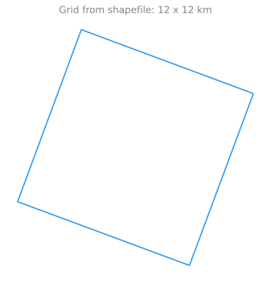

GeoPandas further depends on fiona and matplotlib for plotting.
GeoPandas can read almost any vector-based spatial data format including ESRI shapefile, GeoJSON files and more using the command
import geopandas as gpdimport geodatasetsgdf = gpd.read_file(geodatasets.get_path("geoda.chicago_commpop"))gdf.head(n=2)
community
NID
POP2010
POP2000
POPCH
POPPERCH
popplus
popneg
geometry
0
DOUGLAS
35
18238
26470
-8232
-31.099358
0
1
MULTIPOLYGON (((-87.60914 41.84469, -87.60915 ...
1
OAKLAND
36
5918
6110
-192
-3.142390
0
1
MULTIPOLYGON (((-87.59215 41.81693, -87.59231 ...
which returns a GeoDataFrame object.
A GeoDataFrame is a tabular data structure that contains a GeoSeries.
The most important property of a GeoDataFrame is that it always has one GeoSeries column that holds a special status.
This GeoSeries is referred to as the GeoDataFrame’s “geometry”. When a spatial method is applied to a GeoDataFrame (or a spatial attribute like area is called), this commands will always act on the “geometry” column3.
Imports / setup
We’ve prepared some useful functions in src/ClimRR/data.py to simplify the process of loading and working with our data.
Imports
import matplotlib_inlineimport matplotlib.pyplot as pltimport geopandas as gpdimport warningsimport matplotlib.pyplot as pltfrom enrich.style import STYLESfrom rich.theme import Themefrom rich.console import Console as Consolefrom ClimRR import get_logger, set_plot_stylefrom ClimRR.data import DATA_DIRmatplotlib_inline.backend_inline.set_matplotlib_formats('svg')set_plot_style()theme = Theme(STYLES)log = get_logger()console = Console( theme=Theme(STYLES), log_path=False, markup=True, width=512)
Using updated plot style for matplotlib
Data Organization
The ClimRR Data can be downloaded as a *.zip file, and contains:
Shapefile (as an additional *.zipinside the original)
Individual *.csv’s for each of the climate variables
Figure 1: (Image credit: National Ecological Observatory Network (NEON))
One of the most common file formats for vector data is the ESRI shapefile, which is what we will be working with in be working with in this project.
Metadata
Metadata is “data about the data”4 and is (by design) meant to give additional information or provide context about a dataset.
Examples might include:
When was this data created?
By who? For what? Where at? When? Why??
How is this data licensed?
Is there a reference for this data? (DOI ? URL ? etc.)
What variables or fields are contained in this data?
What do they represent? Are there units?
If the data is geospatial, what geographical or temporal area is included?
Additional (often contextual) information about the data
e.g. “this data was created to inform a population about upcoming weather events” or similar
Metadata is often expected to be of a certain form, or to follow specific conventions / guidelines.
This is important to keep in mind and will allow others to understand your data without needing an explanation (e.g. “what does this abbreviation mean?”, “how is this variable defined?”, etc.)
Some common metadata conventions for GIS data include:
ax = cell.boundary.plot()ax.set_axis_off()_ = ax.set_title('Grid from shapefile: 12 x 12 km')plt.tight_layout()

cell.explore()
Make this Notebook Trusted to load map: File -> Trust Notebook
Load data from *.csv files
Each entry (row) in the .csv has a Crossmodel column (e.g. R146C497) which corresponds to a row in our shapefile that uniquely determines its location on the Earth.
We can associate with each of the .csvs the geometry used in our shapefile to position our data on the globe.
import pandas as pdcsvs = [i for i in DATA_DIR.rglob('*.csv')]data = {}for f in csvs: key = f.stem tmp = pd.read_csv(f.as_posix()) gdf = shape.merge(tmp, on='Crossmodel') gdf['boundary'] = gdf.boundary gdf['centroid'] = gdf.centroid data[key] = gdf console.log(f"data['{key}'].shape={data[key].shape}")
Lets inspect one of the entries in our data[(...)] dictionary, WindSpeed, for example:
data["WindSpeed"].head()
OBJECTID
Crossmodel
Shape_Leng
Shape_Area
geometry
hist
rcp45_midc
rcp45_endc
rcp85_midc
rcp85_endc
mid45_hist
end45_hist
mid85_hist
end85_hist
mid85_45
end85_45
boundary
centroid
0
1
R161C438
63614.764866
2.529273e+08
POLYGON ((-9530601.177 4726046.614, -9534793.8...
7.21540
7.19415
7.38917
7.30470
7.22690
-0.021256
0.173764
0.089297
0.011499
0.110553
-0.162264
LINESTRING (-9530601.177 4726046.614, -9534793...
POINT (-9540369.710 4720470.575)
1
2
R125C222
61384.219597
2.355013e+08
POLYGON ((-12959076.287 4395610.472, -12974301...
8.32612
8.11360
8.26028
8.17420
8.02081
-0.212523
-0.065843
-0.151919
-0.305307
0.060603
-0.239465
LINESTRING (-12959076.287 4395610.472, -129743...
POINT (-12967596.341 4402326.143)
2
3
R121C235
61111.892875
2.334164e+08
POLYGON ((-12754805.395 4355815.951, -12770000...
8.58573
8.59828
8.56058
8.54483
8.55421
0.012547
-0.025149
-0.040898
-0.031519
-0.053446
-0.006370
LINESTRING (-12754805.395 4355815.951, -127700...
POINT (-12763132.114 4362694.465)
3
4
R169C431
64716.234995
2.617618e+08
POLYGON ((-9605729.481 4879238.815, -9609863.1...
9.17284
9.21681
9.44966
9.26548
9.14917
0.043968
0.276813
0.092635
-0.023674
0.048667
-0.300487
LINESTRING (-9605729.481 4879238.815, -9609863...
POINT (-9615619.029 4873482.586)
4
5
R146C497
60142.919468
2.260731e+08
POLYGON ((-8733007.764 4224658.634, -8738250.3...
8.25430
8.19130
8.34417
8.29698
8.29411
-0.062996
0.089874
0.042684
0.039807
0.105680
-0.050067
LINESTRING (-8733007.764 4224658.634, -8738250...
POINT (-8742676.917 4220233.536)
We see that each entry has a geometry column, as well as columns for {hist,rcp45_midc, rcp45_endc, rcp85_midc, rcp85_endc, ...} which contains the numerical value of the WindSpeed in each cell under different scenarios at different points in time.
Let’s look at the WindSpeed for our individual cell:
Getting Python setup correctly can be surprisingly difficult↩︎
The “geometry” column – no matter its name – can be accessed through the geometry attribute (gdf.geometry), and the name of the geometry column can be found by typing gdf.geometry.name.↩︎
![]()